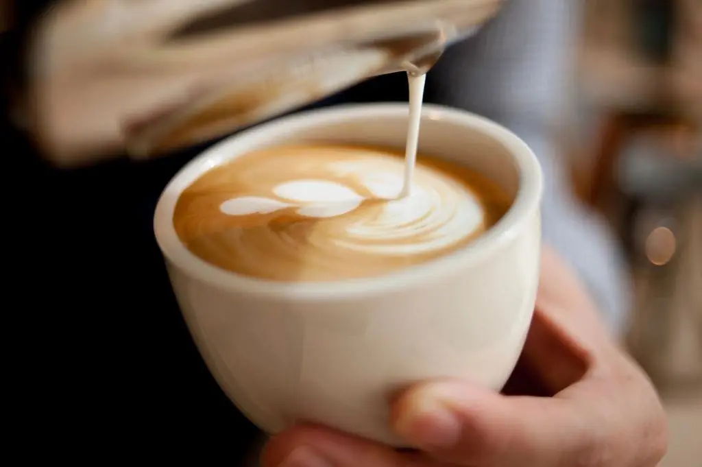

Mjölet kommer från Gävleborg, och inget bröd slängs
Det mesta av mjölet mals av gårdskvarnar i Hälsingland och Gästrikland, och äggen kommer från en gård i Hedesunda. Bröd som blir över säljs till halva priset efter klockan fyra, och det som är kvar vid stängning hämtas av ett härbärge i stan.
Mjölet och äggen
Mjölet kommer från Gävleborg, och inget bröd slängs
Det mesta av mjölet mals av gårdskvarnar i Hälsingland och Gästrikland, och äggen kommer från en gård i Hedesunda. Bröd som blir över säljs till halva priset efter klockan fyra, och det som är kvar vid stängning hämtas av ett härbärge i stan.
- 70 %av mjölet från kvarnar i Gävleborg
- ½ prispå dagens bröd efter klockan 16
- 0bröd i soporna vid stängning


Bagarna
Beställ tårta till kalaset
Prinsesstårta, chokladtårta, morotskaka eller smörgåstårta – från sex till fyrtio bitar. Beställ senast tre dagar innan, så står den klar i disken när du kommer.
Säg till om allergier när du beställer, så bakar vi utan nötter eller laktos.